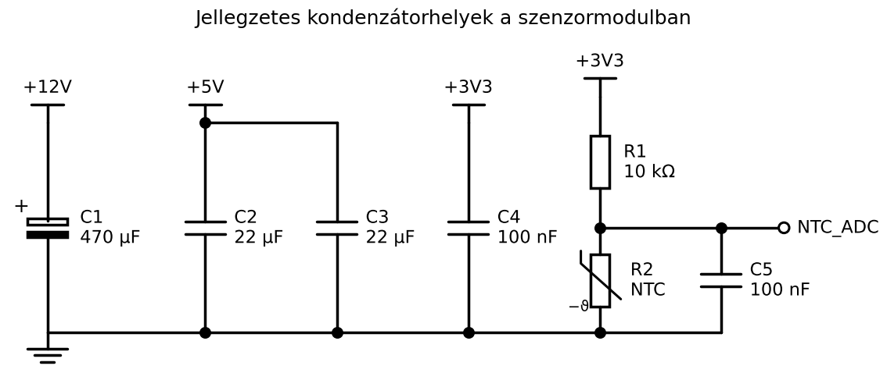
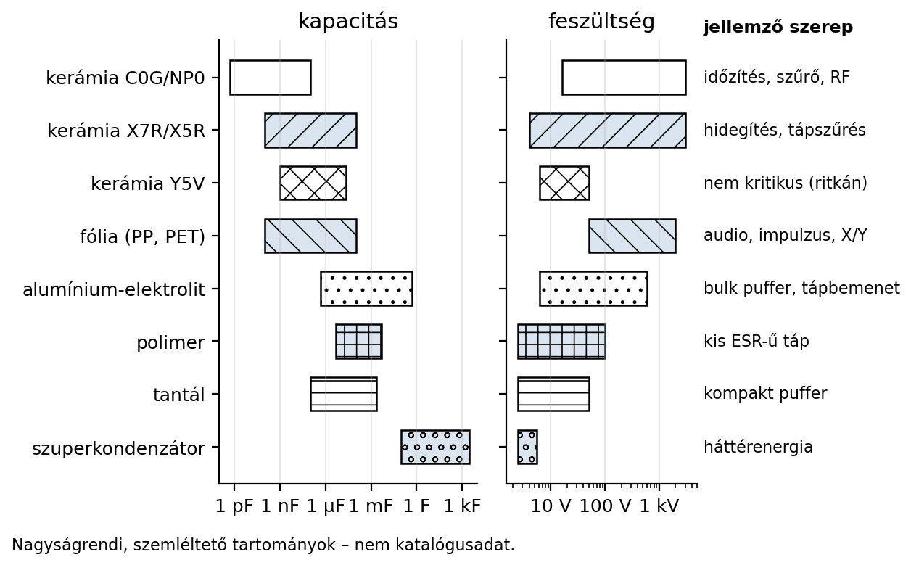
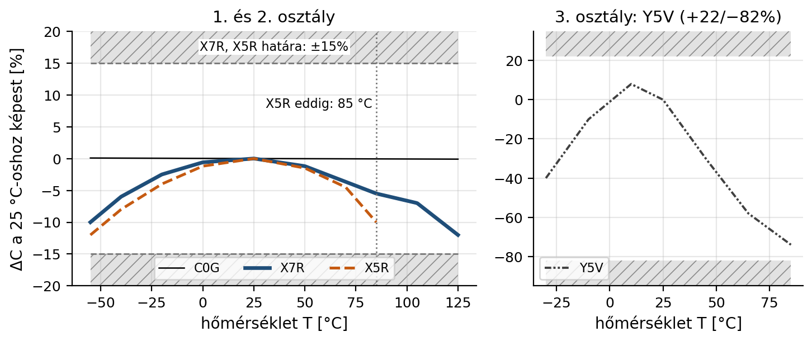

Egy kapacitásérték még nem kondenzátor. Ugyanaz a „10 µF” lehet parányi kerámialapka, hengeres elektrolit vagy műanyag fóliatekercs, és üzem közben egészen máshogy viselkedik. A fejezet végére olvasni fogod a kerámia kondenzátorok hőmérsékleti kódját, megbecsülöd a tényleges kapacitást egyenfeszültség alatt, és indokoltan választasz típust. Előismeret: Kapacitás, töltés és energia.
A szenzormodul 5 V-os kimenetén a tervben „2 × 22 µF X5R” áll, azaz névlegesen 44 µF. A feszültség alatt a mintaadat szerint azonban egy-egy darab csak 11,4 µF-ot ad, együtt 22,9 µF-ot: a névleges érték felét. Ha a tervező ezt nem tudja, a feszültség hullámzása kétszer akkora lesz a számítottnál, és a szabályzó akár instabillá is válhat. Miért tűnik el a kapacitás, és melyik típusnál nem?
A Kapacitás, töltés és energia képlete, , megadja a családok logikáját. Nagy kapacitáshoz nagy (kerámia), nagy felület (elektrolit, felmart fólia, porózus tantál) vagy nagyon kis (néhány nanométeres oxidréteg) kell. Mindhárom útnak ára van: a nagy feszültség- és hőfüggő, a vékony oxid csak egy polaritást visel el, a folyékony elektrolit lassan elpárolog.


A többrétegű kerámia kondenzátor (multilayer ceramic capacitor, MLCC) sok vékony kerámia- és fémréteg egymáson. A kerámiákat osztályokba sorolják:
A 2. és 3. osztály EIA-kódja három karakter: alsó
hőmérséklethatár, felső határ és a megengedett változás a 25 °C-os
értékhez képest
(ellenőrizendő: EIA-198 táblázata; a hatályos kiadás a mérvadó).
Az oszlopok egymástól független jelek, tetszőlegesen kombinálódnak (a
táblázat nem teljes).
| 1. jel (alsó) | 2. jel (felső) | 3. jel (megengedett ΔC) |
|---|---|---|
| X: −55 °C | 5: +85 °C | R: ±15% |
| Y: −30 °C | 7: +125 °C | S: ±22% |
| Z: +10 °C | 6: +105 °C, 8: +150 °C | U: +22/−56%, V: +22/−82% |
Így az X7R −55…+125 °C között legfeljebb ±15%-ot változik, az X5R ugyanennyit, de csak +85 °C-ig, az Y5V pedig −30…+85 °C között +22/−82%-ot. Fontos: ez a határ csak a hőmérsékletre, nulla egyenfeszültségen, nagyon kis mérőjellel érvényes. A feszültségfüggésről a kód semmit sem mond.

A 2. osztályú kerámiában az egyenfeszültség a kristály kis tartományait (doméneket) egy irányba rendezi, ezért kevésbé tudnak „válaszolni” a jelre: a kapacitás csökken. Ez a DC-bias hatás. Minél kisebb a tok és minél vékonyabb a réteg ugyanahhoz a névleges értékhez, annál erősebb. A C0G-nél nincs érdemi DC-bias.
A hatást csak a gyártó görbéje adja meg. A tényleges érték:
ahol a görbéről olvasott arány, a gyártási tűrés (negatív, ha a legrosszabb esetet vizsgáljuk), a hőmérsékleti relatív változás. Mindegyik tényező dimenziótlan, tehát faradban adódik. A szorzatos alak közelítés: azt feltételezi, hogy a hatások egymástól függetlenek; pontos munkához a gyártó kombinált adatai kellenek. Két adatpont között egyenes vonallal interpolálunk.
Gondolkodj előre. 12 V egyenfeszültségen melyik ad több kapacitást: egy 10 µF/16 V-os, 0805-ös X7R, vagy egy 4,7 µF/50 V-os, 1206-os X7R? Tippelj, aztán nézd meg az interaktív ábrán (a válasz a 3. feladat megoldásában is szerepel).
További jelenségek a 2. osztálynál:
ellenőrizendő: gyártói adatlap). A C0G nem
öregszik érdemben.A dielektrikum műanyag fólia: polipropilén (PP) (kis veszteség, stabil, audio- és impulzuskörök) vagy poliészter (PET) (nagyobb , kisebb méret, gyengébb stabilitás). Nincs DC-bias, nincs polaritás, cserébe nagy a méretük. A fémgőzölt fóliájú típusok öngyógyulók: átütéskor a hiba körül elpárolog a vékony fémréteg, és a kondenzátor tovább él, kicsit kisebb kapacitással.
A biztonsági kondenzátorok hálózati zavarszűrésre
minősítettek: az X osztályú a két hálózati vezető közé,
az Y osztályú vezető és védőföld (vagy fémház) közé
kerül, és hiba esetén sem okozhat áramütésveszélyt
(ellenőrizendő: IEC 60384-14). A könyv nem dolgozik
hálózati feszültséggel; a fogalom a Zajszűrés: RC,
LC, ferrit, közös módusú fojtó, árnyékolás alfejezetben kerül
elő.
(ellenőrizendő: gyártói ajánlás).A polaritásjelölés csapda: az alumínium SMD-elektrolit tetején a sötét szegmens a negatív kivezetést, a tantálchip sávja a pozitív kivezetést jelöli (mindig az adatlappal egyeztesd). A rajzon a „+” jel a pozitív oldalt mutatja.
A szuperkondenzátor farad nagyságrendű, de csak 2–3 V cellánként; energiatárolásra való.
(ellenőrizendő: IEC 60062); elektrolitnál gyakori a
±20%.| Feladat | Javaslat | Indok |
|---|---|---|
| időzítés, pontos RC-szűrő, kristály-terhelés | C0G (nagyobb értéknél PP fólia) | stabil hőre és feszültségre |
| hidegítés (a táp helyi árama) | X7R MLCC, kis tok | kis parazita, olcsó |
| bulk puffer (nagy, lassú energiatartalék) | Al-elektrolit vagy polimer | sok µF olcsón |
| audio csatolás | PP fólia vagy C0G | nincs torzítás, nincs mikrofónia |
| nagyfeszültség, impulzus | fólia vagy nagyfeszültségű kerámia | feszültségtűrés, kis veszteség |
A hidegítő kondenzátor (decoupling capacitor) az IC tápja mellé tett kondenzátor, amely a gyors áramlökéseket helyből látja el. A bulk kondenzátor a sín nagyobb, lassabb energiatartaléka.
Továbbvitt eredmény. A 2. osztályú MLCC tényleges kapacitása a DC-bias miatt lényegesen kisebb lehet a névlegesnél (például 22 µF 0805 X5R 5 V-on 11,4 µF, mintaadat); ezt a Teljesítménymérleg, lineáris szabályzó és LDO, a Hatásfok, veszteségek, alkatrészválasztás és kapcsolóüzemű zaj és a Tápintegritás és hidegítés alfejezet használja.
Továbbvitt eredmény. Időzítéshez és pontos szűrőhöz C0G, hidegítéshez X7R (vagy hasonló 2. osztályú MLCC); lásd Szűrőtervezés alapjai: rendűség, Butterworth és tűrés, Oszcillátorok, kristályok és órajel és Tápintegritás és hidegítés. Az X/Y kondenzátor fogalma a Zajszűrés: RC, LC, ferrit, közös módusú fojtó, árnyékolás alfejezetben tér vissza.
A buck konverter a 12 V-ból állítja elő az 5 V-ot (részletesen: A buck konverter). A kimenetén 2 × 22 µF, 0805 X5R, 10 V-os MLCC van (mintaadat). A görbe adatpontjai: 3,3 V-on 71%, 5 V-on 52%.
1. Interpoláció 4 V-ra (nem adatpont): , tehát .
2. Üzemi pont (5 V, 25 °C): , két darab 22,9 µF.
3. Legrosszabb eset: −20% tűrés (M), 5 V, °C (a modul legnagyobb környezeti hőmérséklete). Az X5R mintaadata 50 °C-on −1,5%, 70 °C-on −4,5%, tehát 60 °C-on −3%:
Két darab együtt csak 17,8 µF, a névleges 44 µF 40%-a (öregedés nélkül). Józanész-ellenőrzés: a legnagyobb tétel a DC-bias, a tűrés a második; a hő itt kicsi. A hullámosságot a legkisebb értékkel kell számolni.
Az elkit.parts az EIA-kódot és a DC-bias-görbét
mintaadatból kezeli.
from elkit import parts, units
for kod in ("C0G", "X7R", "X5R", "Y5V"):
k = parts.eia_code(kod)
if k["class"] == 1:
valt = f"±{k['tc_ppm']} ppm/K"
else:
valt = f"{k['change_min']:+d}/{k['change_max']:+d}%"
print(f"{kod}: {k['class']}. osztály, {k['t_min']}…{k['t_max']} °C, {valt}")C0G: 1. osztály, -55…125 °C, ±30 ppm/K
X7R: 2. osztály, -55…125 °C, -15/+15%
X5R: 2. osztály, -55…85 °C, -15/+15%
Y5V: 3. osztály, -30…85 °C, -82/+22%c = parts.mlcc("22u_0805_X5R_10V")
for u in (0.0, 3.3, 4.0, 5.0):
print(f"{u:3.1f} V: {100 * c.bias_factor(u):5.1f}% {units.fmt(c.capacitance(u), 'F')}")
rossz = c.capacitance(5.0, t=60.0, tolerance=-0.2)
print("legrosszabb eset egy darabra:", units.fmt(rossz, "F"),
" két darabra:", units.fmt(2 * rossz, "F"))0.0 V: 100.0% 22 µF
3.3 V: 71.0% 15.6 µF
4.0 V: 63.2% 13.9 µF
5.0 V: 52.0% 11.4 µF
legrosszabb eset egy darabra: 8.88 µF két darabra: 17.8 µF10u_0805_X7R_16V vagy 4u7_1206_X7R_50V?
Számold ki mindkettőt a mintaadatból.A kondenzátortípust a dielektrikum és az elektród határozza meg. Az 1. osztályú C0G kerámia stabil, de kis értékű; a 2. osztályú X7R/X5R kis tokban sok kapacitást ad, viszont hőre, egyenfeszültségre és időre változik; a 3. osztály erősen változik. Az EIA-kód csak a hőfokfüggést korlátozza. A tényleges érték a névleges, a tűrés, a DC-bias-arány és a hőmérsékleti változás szorzata: a 22 µF-os 0805 X5R 5 V-on 11,4 µF, legrosszabb esetben 8,9 µF (mintaadat). A fólia stabil és öngyógyuló, az alumínium-elektrolit olcsó puffer, a tantál rövidzárral hibásodhat, a polimer kis veszteségű; elektrolitoknál a polaritás kötelező. Időzítéshez C0G, hidegítéshez X7R, pufferhez elektrolit vagy polimer.
1. X6S: −55 °C-tól +105 °C-ig, ±22%. Z5U: +10 °C-tól +85 °C-ig, +22/−56%.
2. 475K: , ±10%. 102J: , ±5%.
3. 12 V-on a 10 µF-os minta aránya 0,39, tehát 3,9 µF; a 4,7 µF-osé 0,85, tehát . A fele akkora névleges értékű, nagyobb tokú és feszültségű alkatrész többet ad (mintaadat).
4. (a) C0G: a frekvencia pontossága a kapacitástól függ. (b) Alumínium-elektrolit vagy polimer: nagy érték olcsón; a gyors tüskékhez mellé kerámia. (c) PP fólia (vagy C0G, ha elérhető a méret): nincs torzítás és mikrofónia. (d) C0G (vagy PP fólia): stabil, kis tűréssel kapható.
5. , a következő szokásos érték 35 V. A 30 V-os impulzus 35 V alatt marad, de a derating-szabályt a csúcsra már nem tartja, és a tantál áramlökésre érzékeny; inkább polimer vagy alumínium-elektrolit, és bemeneti védelem (Tápbemeneti védelmek: biztosíték, polaritás, túlfeszültség, áramlökés).
6.
import math
for nev in parts.mlcc_samples():
m = parts.mlcc(nev)
if m.c_nom < 1e-6 or m.u_rated < 10:
continue
c1 = m.capacitance(5.0, t=60.0, tolerance=-0.2)
n = math.ceil(30e-6 / c1)
print(f"{nev:18s} {units.fmt(c1, 'F'):>8s} darab: {n}")1u_0603_X7R_25V 703 nF darab: 43
4u7_1206_X7R_50V 3.56 µF darab: 9
10u_0603_X5R_10V 3.72 µF darab: 9
10u_0805_X7R_16V 5.78 µF darab: 6
22u_0805_X5R_10V 8.88 µF darab: 4
22u_1210_X7R_16V 14.8 µF darab: 3
10u_0805_Y5V_16V 1.76 µF darab: 18A legkevesebb darabot a 22 µF-os 1210 X7R adja. A kód a legrosszabb esetet számolja, öregedés nélkül, ezért a tartalék még így is indokolt. A Y5V-minta a sok darab ellenére sem jó választás: hőmérsékleti tartománya szűk, változása nagy.